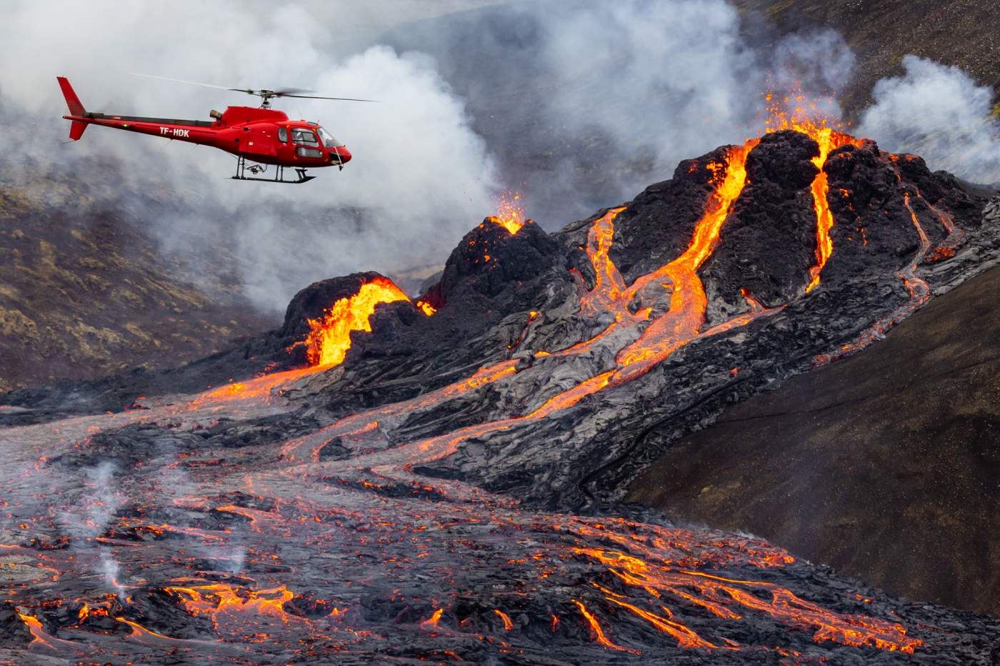

Vulcão em atividade deixa Penalva em Alerta .
De acordo com cientistas que atuam na área, o vulcão Bakiki entrou em atividade, gerando preocupação entre os civis locais em relação à sua segurança. As autoridades já se mobilizaram para garantir a segurança da população diante dessa situação. O vulcão apresenta um índice de explosão vulcânica de 3, o que se torna um desafio para as autoridades acalmarem os residentes da pequena vila afetada.
Apesar disso, os cientistas especializados no assunto afirmam que o vulcão não está em estado de alerta, mas apenas ativo. As autoridades também asseguram que não há motivo para pânico e que a situação está sob controle. Medidas preventivas foram tomadas para garantir a segurança da população, e equipes especializadas estão monitorando de perto a atividade vulcânica.
Em resposta à preocupação dos civis, as autoridades reforçaram a importância de seguir as orientações de segurança e estar preparados para possíveis evacuações, caso a situação se agrave. Os moradores foram instruídos a manter a calma e a confiar nas medidas de proteção implementadas pelas autoridades locais.
Enquanto isso, os cientistas continuam monitorando de perto o vulcão Bakiki, coletando dados e realizando análises para avaliar a evolução da atividade vulcânica. O objetivo é fornecer informações precisas e atualizadas para que as autoridades possam tomar as melhores decisões em relação à segurança da população.
É importante ressaltar que, apesar das preocupações, a comunidade científica e as autoridades estão trabalhando de forma coordenada para mitigar os riscos e garantir a segurança dos residentes da região afetada pelo vulcão Bakiki.
